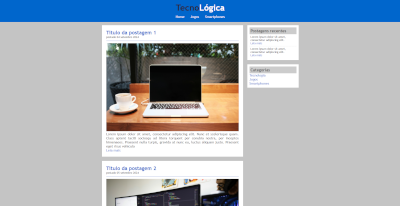
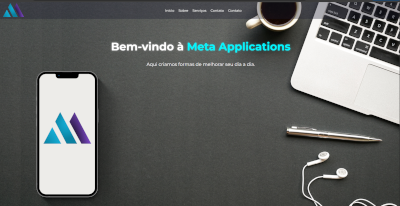

Desenvolvedor em Desenvolvimento
Me chamo Daniel Alves, sou apaixonado por tecnologia e gosto muito de aprender coisas novas. Já explorei diferentes áreas da programação, tanto por curiosidade quanto por necessidade.
Infelizmente ainda não trabalho na área, mas já tive o prazer de desenvolver três protótipos de aplicativos em Java no Android Studio. Claro que assistindo aulas e com o apoio da IA, mas nesse processo aprendi muito sobre Java, POO, LiveData, Room, entre outras tecnologias. Atualmente, meu foco está voltado para HTML, CSS e JavaScript, desenvolvendo sites úteis.
No momento trabalho em uma área completamente distante da tecnologia, mas quando estiver pronto para os estágios, irei me dedicar ao máximo para conquistar uma vaga. Trabalhar com tecnologia sempre foi minha paixão, então, assim que possível, irei me candidatar às vagas de emprego na área.
Como cristão, tenho muito interesse na teologia Reformada, principalmente nas doutrinas da graça e nos cinco solas.
Gosto muito de games, especialmente aqueles que me desafiam em lógica, gerenciamento e criatividade. Sou casado, e meu hobby é ficar em casa e assistir a filmes, ou jogar algum game.
DevClub Story é um site de aparelhos eletrônicos desenvolvido em aula com o professor Rodolfo Morii, do canal DevClub. O projeto teve como objetivo aplicar e aprimorar conhecimentos em HTML, CSS e JavaScript.
TecnoLógica é um blog sobre tecnologia, desenvolvido em aula com o professor Giuliano Lanes, durante o curso de Engenharia de Software na UNINTER.
Meta Applications é um projeto em desenvolvimento: um site destinado a centralizar meus aplicativos Android. (Em progresso)